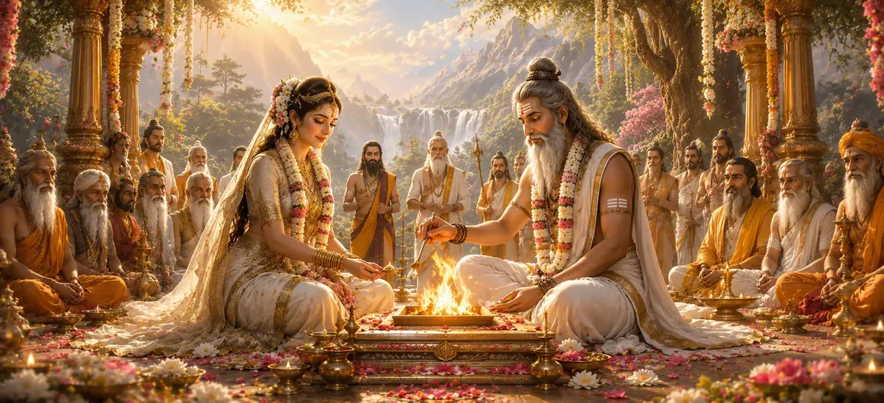

हिंदू परंपरा में मनाई जाने वाली पूजनीय महिलाओं में अरुंधति को असाधारण सम्मान का स्थान प्राप्त है। अपनी बुद्धिमत्ता, पवित्रता, भक्ति और दृढ़ चरित्र के लिए प्रसिद्ध, वह आदर्श नारीत्व और आध्यात्मिक उत्कृष्टता का एक स्थायी प्रतीक बन गईं। उनका जीवन दर्शाता है कि कैसे सदाचार, विनम्रता और धर्म के प्रति अटूट प्रतिबद्धता किसी व्यक्ति को शाश्वत श्रद्धा की स्थिति तक पहुंचा सकती है।
यह अध्याय सबसे प्रतिष्ठित सप्तर्षियों में से एक, अरुंधति और महान ऋषि वशिष्ठ के पवित्र विवाह का वर्णन करता है। उनका मिलन केवल एक सांसारिक रिश्ता नहीं था बल्कि ज्ञान, आध्यात्मिक अनुशासन, पारस्परिक सम्मान और सत्य के प्रति समर्पण पर आधारित एक दिव्य साझेदारी थी। उनके विवाह के माध्यम से, शिव पुराण आध्यात्मिक जीवन और घरेलू कर्तव्यों के बीच सामंजस्य का एक आदर्श उदाहरण प्रस्तुत करता है।
छोटी उम्र से ही अरुंधति की बुद्धिमत्ता, विनम्रता और धर्म के प्रति समर्पण के लिए प्रशंसा की जाती थी। वह एक शांत और अनुशासित दिमाग की मालिक थीं और संतों और महान आत्माओं द्वारा समान रूप से उनका सम्मान किया जाता था। उनका आचरण सदाचार के उच्चतम आदर्शों को प्रतिबिंबित करता था, जिससे वह पवित्रता और आध्यात्मिक उत्कृष्टता का एक चमकदार उदाहरण बन गईं।
वशिष्ठ प्रसिद्ध सप्तऋषियों में से एक थे और दिव्य ज्ञान के स्वामी थे। तीनों लोकों में पूजनीय, वह अपने गहन आध्यात्मिक ज्ञान, करुणा और सत्य के प्रति अटूट समर्पण के लिए जाने जाते थे। उनका जीवन एक आदर्श संत के आदर्शों को मूर्त रूप देता है, जो उन्हें समान रूप से एक महान साथी के योग्य बनाता है।
अरुंधति और वशिष्ठ दोनों के महान गुणों को पहचानते हुए, ऋषियों और दिव्य प्राणियों ने उनके मिलन को दैवीय रूप से नियुक्त माना। उनका विवाह केवल एक सामाजिक कार्यक्रम के रूप में नहीं बल्कि एक पवित्र गठबंधन के रूप में मनाया गया जो धर्म को कायम रखेगा और अपने उदाहरण से भावी पीढ़ियों को प्रेरित करेगा।
जब शुभ समय आया, तो अरुंधति और वशिष्ठ का विवाह पवित्र वैदिक परंपराओं के अनुसार संपन्न हुआ। इस समारोह में संतों, दिव्य प्राणियों और महान आत्माओं ने भाग लिया, जो दो अनुकरणीय व्यक्तियों के मिलन को देखकर प्रसन्न हुए। इस अवसर पर आध्यात्मिक आनंद, पवित्रता और दिव्य आशीर्वाद का संचार हुआ।
अरुंधति आंतरिक पवित्रता और अटूट नैतिक चरित्र का प्रतीक बन गईं।
उनके जीवन ने धर्म और आध्यात्मिक मूल्यों के प्रति पूर्ण समर्पण प्रदर्शित किया।
वशिष्ठ के साथ उनका मिलन सद्भाव और पारस्परिक सम्मान का एक शाश्वत मॉडल बन गया।
अपनी शादी के बाद, अरुंधति और वशिष्ठ न केवल पति-पत्नी के रूप में बल्कि एक साझा आध्यात्मिक यात्रा के साथी के रूप में भी रहे। साथ मिलकर उन्होंने पवित्र परंपराओं को कायम रखा, धर्म का पालन किया और अनगिनत साधकों को ज्ञान की ओर मार्गदर्शन किया। उनके रिश्ते ने प्रदर्शित किया कि भक्ति और सदाचार पर आधारित होने पर गृहस्थ जीवन आध्यात्मिक पूर्ति का मार्ग कैसे बन सकता है।
उनके विवाह की विशेषता जो सद्भाव और धर्म थी, उससे उनके संपर्क में आने वाले सभी लोगों को आशीर्वाद मिला। राजा, ऋषि-मुनि और सामान्य लोग समान रूप से उनका मार्गदर्शन चाहते थे। उनका घर ज्ञान, करुणा और आध्यात्मिक शिक्षा का केंद्र बन गया जहां धर्म के मूल्यों को संरक्षित किया गया और भावी पीढ़ियों तक पहुंचाया गया।
समय के साथ, अरुंधति हिंदू परंपरा में सबसे सम्मानित महिला शख्सियतों में से एक बन गईं। उसका नाम वफादारी, ज्ञान, भक्ति और नैतिक उत्कृष्टता का प्रतिनिधित्व करने के लिए आया था। आज भी, नवविवाहित जोड़ों को अक्सर अरुंधति को वफादारी और आध्यात्मिक साझेदारी के एक आदर्श उदाहरण के रूप में याद दिलाया जाता है।
अरुंधति और वशिष्ठ की कहानी हिंदू धर्मग्रंथों में पवित्र साहचर्य की सबसे प्रेरक कहानियों में से एक है। उनका जीवन यह सिखाता रहता है कि सच्ची महानता विनम्रता, भक्ति, ज्ञान और धर्म के प्रति अटूट प्रतिबद्धता के माध्यम से प्राप्त की जाती है। उनकी विरासत युगों-युगों तक सत्य के सभी चाहने वालों के लिए एक प्रकाशस्तंभ के रूप में चमकती रहती है।
उनका पवित्र मिलन हिंदू परंपरा में आध्यात्मिक साहचर्य का सबसे बड़ा उदाहरण बन गया। उन्होंने मिलकर प्रदर्शित किया कि भक्ति, ज्ञान, पारस्परिक सम्मान और धर्म एक धन्य जीवन की सच्ची नींव हैं।
अरुंधति की महानता इतनी प्रसिद्ध हो गई कि वह सितारों के बीच अमर हो गईं। बाद की परंपरा में, वह स्टार अल्कोर से जुड़ी हुई थी, जो सात ऋषियों के तारामंडल में वसिष्ठ (मिज़ार) के साथ दिखाई देता है। यह दिव्य प्रतीकवाद उनके अविभाज्य आध्यात्मिक बंधन को दर्शाता है।
अपने धार्मिक मिलन के माध्यम से, अरुंधति और वशिष्ठ एक प्रतिष्ठित आध्यात्मिक वंश के पूर्वज बन गए। उनके वंशजों में महान ऋषि शामिल थे जिन्होंने पवित्र ज्ञान को संरक्षित किया और आने वाली पीढ़ियों को धर्म के मार्ग पर निर्देशित किया। उनका घर आध्यात्मिक ज्ञान और दिव्य संस्कृति का केंद्र बन गया।
सदियों से, हिंदू समाज अरुंधति और वशिष्ठ को वैवाहिक सद्भाव और आध्यात्मिक साझेदारी का प्रतीक मानता है। उनका रिश्ता सिखाता है कि सच्चा विवाह केवल सांसारिक लगाव पर आधारित नहीं है, बल्कि साझा मूल्यों, आपसी सहयोग और दैवीय सिद्धांतों के प्रति समर्पण पर आधारित है।
अरुंधति और वशिष्ठ के पवित्र विवाह को देखने के बाद, कहानी अब सती खण्ड की घटनाओं में एक और महत्वपूर्ण प्रकरण की ओर बढ़ती है। जैसे-जैसे कहानी आगे बढ़ती है, नए पात्र, दैवीय बातचीत और गहन आध्यात्मिक पाठ प्रतीक्षा करते हैं।
"जहां सद्गुण और भक्ति एकजुट होते हैं, वहां दिव्य कृपा हमेशा चमकती रहती है। अरुंधति और वशिष्ठ का जीवन हमें याद दिलाता है कि सच्चा साथ धर्म, ज्ञान और अटूट विश्वास में निहित है।"
अरुंधति और वशिष्ठ के पवित्र मिलन को देखने के बाद, कथा अब लौकिक कहानी में एक नए और सुंदर अध्याय की ओर मुड़ती है। वसंत का आगमन, वसंत का मौसम, नवीनीकरण, सौंदर्य, आनंद लाता है और दुनिया को उन घटनाओं के लिए तैयार करता है जो देवताओं और प्राणियों के भाग्य को समान रूप से आकार देंगे।